Kibbi makes a list of cheap games on Steam that she likes. Most are about cats.
Oh man, I love puzzle games. I've wanted to do something like this for a while, actually. I
believe back in november I tried making a list in the form of a Twitter thread, but it was too
hard for me to write short descriptions for all of the games I wanted to include. Character
limits suck, especially if you're bad with words!!! Well, on tuesday while on the tram to go
About, my friend (who is probably reading this, hi!) brought up how he loves looking through my
library and finding all the fun, short puzzles I've bought over the years. It reminded me of
this idea! So I sat down and got to it. This will mostly be small indie titles that are cheap
and vary in puzzle genre, so you most definitely will find something you like :)
I divided
the games into the puzzle genre they call under, that way it's easier to find specific games!
All prices are listed in USD and the images link you to the Steam page. I'll update this list as
I find more!
If you don't know what minesweeper is (I'm silently judging you...), it's a board of little
buttons, with some having mines underneath them. You have to clear the board without detonating
any mines, with the help from clues about the number of neighboring mines to each button. It's
fun, but can get pretty tricky sometimes! This is probably one of my favorite genres of puzzle
games.
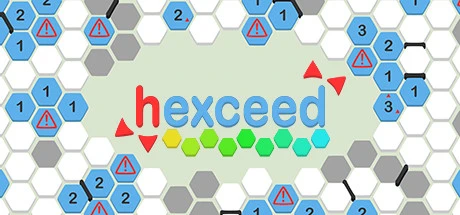
Time: 30+ hrs | Price: Free (with paid DLC) | Levels: A lot + DLC | Achievements? 140+ | Trading Cards? No
This is what got me into minesweeper. I love hexceed with all my heart! It starts out easy and
progressively gets more difficult, with a very nice difficulty curve. There's lots and lots of
levels (at the time of writing I believe they're still releasing new ones!) with hexagonal tiles
and different gimmicks that are easy to learn! I recommend this game for both beginners and more
advanced players, it's very calming and easy to get into!
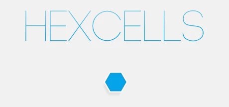 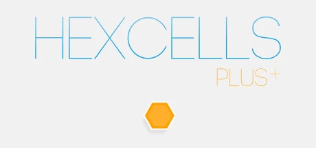 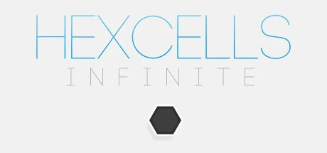
Time: 1.5 hrs | Price: $2.99 | Levels: 30 | Achievements? 6 | Trading Cards? No
First in the series, Hexcells is a very short and simple hexagon minesweeper game. Has a few
gimmicks that show up over the course of the levels. Very short, but I recommend it nonetheless.
Time: 8 hrs | Price: $2.99 | Levels: 36 | Achievements? 6 | Trading Cards? No
Hexcells Plus is a sequel, adding 36 new levels. The mechanics are very similar, but the levels
get slightly harder. It's slightly longer than Hexcells, so if you enjoyed that I recommend Plus
as well.
Time: 8 hrs | Price: $4.99 | Levels: 36 + Level Generator | Achievements? 7 | Trading Cards? No
Arguably the best game in the series, featuring a random level generator (all of them solvable
without guessing)! This is the hardest game in the series, taking around the same amount of time
to beat as Plus. I think this one is the most worth it!
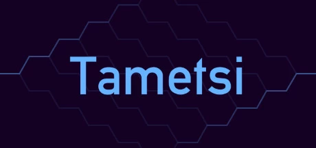
Time: 40+ hrs | Price: $2.99 | Levels: 160 | Achievements? 19 | Trading Cards? No
Tametsi is definitely one of the more popular minesweeper games, but it's definitely not beginner friendly! The puzzles in this game are very difficult (I must admit I still haven't beatem them all...). The buttons in Tametsi have different shapes and simple rulesets used in different levels to spice things up a little bit! I definitely recommend it for people who are more advanced in minesweeping.
You know Where's Waldo? This is it, but digital. Very relaxing games!
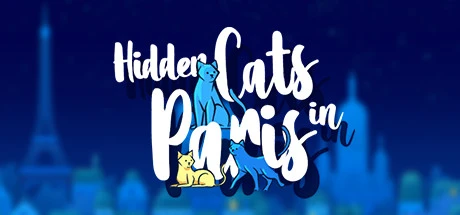 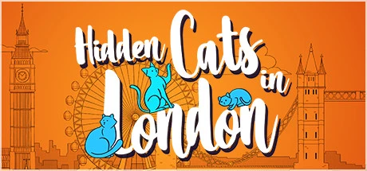
Time: 0.5 hr | Price: $0.99 | Levels: 1 | Achievements? 21 | Trading Cards? No
This one is very short, but also cheap! Hidden Cats in Paris is a very calming experience, with
lots of furry friends to look for :)
Time: 1 hr | Price: $1.99 | Levels: 300+ (free) | Achievements? 44 | Trading Cards? No
Hidden Cats in London is the second game in the series. Featuring a "randomizer" as well as a
normal level and an additional 6 unlockable levels! I really love this game :D
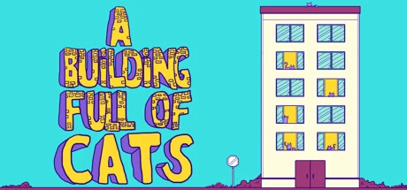
Time: 1 hr | Price: $1.99 | Levels: 7 | Achievements? 23 | Trading Cards? 6
A very cute game, featuring a building full of cats to discover! The developers donate a
percentage of their earnings to charity and promote the ADOPT, DON'T SHOP message, which I
couldn't agree more with! Support these devs please!
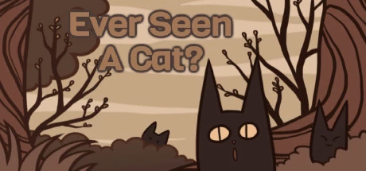
Time: - | Price: - | Levels: - | Achievements? Yes | Trading Cards? Yes
I linked a bundle of the three games. Ever Seen A Cat? changes the positions of the felines every
playthrough, so every level is different every time you play! I like it a lot. Has very nice
visuals, I'd definitely recommend it.
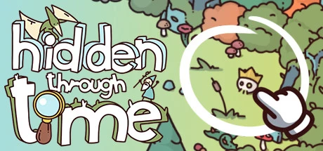
Time: 1 hr | Price: $7.99 | Levels: 26 + DLC | Achievements? 19 | Trading Cards? No
Even if more expensive than the rest, it's still worth mentioning. Hidden Through Time makes you
look for objects scattered around different time periods! It's a silly little game that also
shows the historical advancements of humanity.
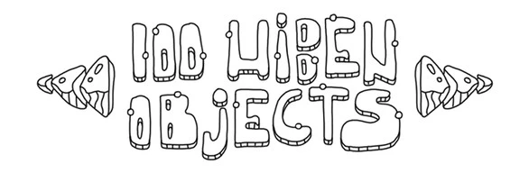
Time: - | Price: - | Levels: - | Achievements? Yes | Trading Cards? No
I decided to link a bundle full of games like this. A whole series of hidden object games with different topics and illustrations! You'll definitely find something you like here.
Time: 6 hrs | Price: $1.99 | Levels: 24 + Level Generator | Achievements? 15 | Trading Cards? 6
One of my favorite games from this list, from the developers of A Building Full of Cats! Sudocats
is an adorable sudoku game with a daily level generator! If you're gonna buy anything from this
list, get this one.
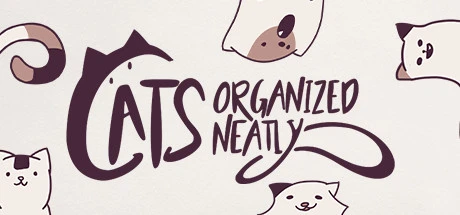
Time: 3 hrs | Price: $2.99 | Levels: 80 | Achievements? 20 | Trading Cards? 6
Both games are very similar, but featuring different animals! These are amazing games, very
relaxing and peaceful :D They also have a paper print out version, which I find adorable! I
definitely recommend them!
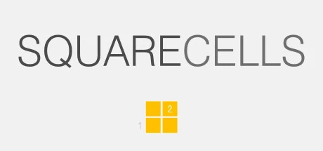
Time: 3 hrs | Price: $2.99 | Levels: 50 | Achievements? 10 | Trading Cards? No
A logic mathy-looking puzzle. It's minesweeper-adjacent, but doesn't really fit the category. Not
my taste, but maybe you might like it?
Time: 3 hrs | Price: $2.99 | Levels: 36 | Achievements? 7 | Trading Cards? No
Slightly similar to Crosscells? It's not my cup of tea either, but it's very nicely made.
I think this is enough for now! I'll add on more games as I play more. I hope something here
caught you attention :)
Back to blog index